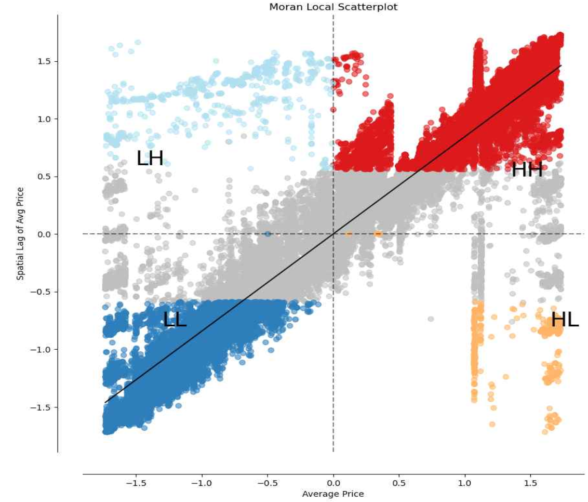
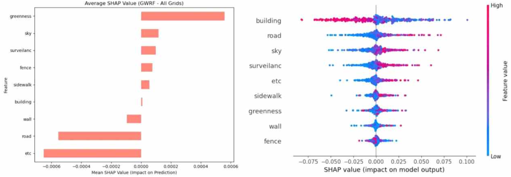
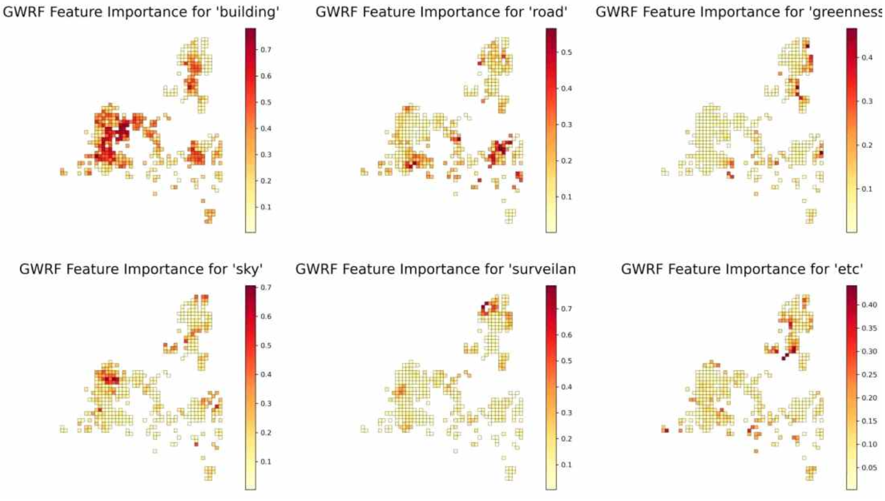
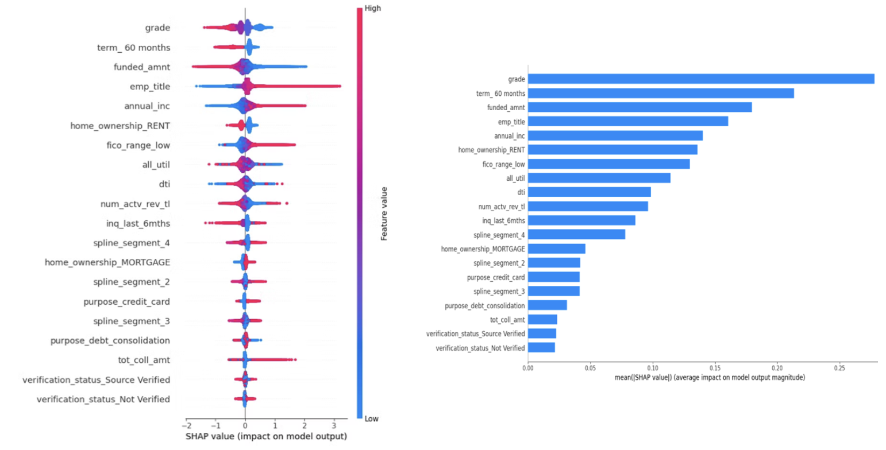

데이터를 수집하고 검증하는 단계부터 모델링·배포까지 직접 설계하는 개발자 이주헌입니다.
창원시 DRT 프로젝트에서는 1,188개 CSV 파일을 직접 수집하고 PostGIS 기반 DB를 설계했습니다. 졸업논문에서는 KISA 가이드 15개 항목을 기준으로 Windows 서버 취약점을 자동 진단하고 Gemini API로 조치 방안을 생성하는 파이프라인을 단독으로 설계했습니다. Lending Club 프로젝트에서는 4개 모델을 비교해 SHAP으로 판단 근거까지 검증했습니다. 데이터 수집부터 배포까지 전 과정을 직접 다뤄본 만큼, 어느 단계에서 문제가 생겨도 원인을 찾아 해결할 수 있습니다.
MES 반송 Cancel 사유 분석, xEV Daily Sales, Demand vs RTF Trends 3건 모두 담당자가 매번 여러 시스템을 오가며 수기로 처리하던 반복 업무였습니다.
Brity Automation으로 이 3건을 현업 인터뷰부터 배포까지 직접 진행했습니다. MES 반송 Cancel 사유 분석은 150분에서 20~30분으로 줄었습니다. GSCM 업무인 xEV Daily Sales와 Demand vs RTF Trends 중, xEV Daily Sales는 120분에서 15분(약 87.5% 단축)으로 줄었고 Demand vs RTF Trends는 매일 하던 검토를 주 1회로 바꿔서, 담당자가 반복 작업 대신 예외 상황 검토에 시간을 쓸 수 있게 했습니다.
현업 요구사항을 직접 인터뷰해 정형화하고 설계부터 배포까지 혼자 진행해본 경험이라, 반복되는 데이터 처리를 자동화 파이프라인으로 구조화하는 이 접근 방식을 다른 데이터 수집·처리 업무에도 비슷하게 적용할 수 있다고 생각합니다.
배경과 문제 — 전자금융기반시설은 연 1회 취약점 점검 의무가 있지만, 보안 담당자의 63.8%가 타 업무와 겸업 중이라 자동화 점검 도구가 필요했습니다.
접근 방법 — KISA 가이드 15개 항목을 Windows 기본 명령어로 점검하고, 결과를 Gemini API로 분석해 위협 설명과 조치 방법까지 자동 생성했습니다.
기술 선택과 판단 — 점검 결과를 JSON으로 먼저 구조화한 뒤 LLM에 넘겨 환각으로 인한 오탐을 줄였고, Gemini Pro 유료 전환 이후 무료 티어 중 성능이 나은 gemini-2.5-flash-lite를 선택했습니다.
구현 제약 — 점검(배치 스크립트)과 분석(Python+AI)을 물리적으로 분리해, 외부 통신이 제한된 실제 금융권 서버에도 적용 가능하게 설계했습니다.
결과 — 의도적으로 조성한 취약점 2개를 모두 탐지(2/2)했고, 전체 15개 항목 기준 종합 보안 점수 64점(C등급)이 나왔습니다.
배경과 문제 — 창원시 외곽·고령 인구 밀집 지역은 기존 버스 노선망에서 소외되어, 수요응답형 교통(DRT) 정류장의 최적 입지를 데이터로 도출해야 했습니다.
접근 방법 — STCIS 정류장 데이터를 자동 수집해 PostGIS에 적재하고, LISA 공간통계로 취약 군집을 찾은 뒤 후보지를 단계적으로 필터링했습니다.
기술 선택과 판단 — 공개 API가 없어 Selenium을 썼고, 공간 조회 성능을 위해 PostGIS GIST 인덱스를, 공간적 자기상관 검증을 위해 LISA(Queen 인접행렬)를 사용했습니다.
구현 제약 — 수집 실패에 대비한 재시도 로직과 해시 기반 중복 제거를 넣었고, 도로 300m 버퍼와 3×3 셀 비교로 설치 가능성과 형평성을 함께 고려했습니다.
결과 — Moran's I 0.8436(p=0.001)로 유의미한 취약 군집성을 확인했고, 최종 DRT 후보지 99곳을 확정했습니다.

배경과 문제 — 경찰청 Pre-CAS는 범죄 발생 가능성만 수치화할 뿐 조도·건물 밀집도 같은 물리적 원인은 진단하지 못해, CPTED 원칙과 결합한 분석이 필요했습니다.
접근 방법 — Pre-CAS 기반 고위험지 430곳의 Street View를 수집해 환경 요소를 분류하고, 이를 CPTED 4대 원칙에 매핑해 Crime Safety Index를 만들었습니다.
기술 선택과 판단 — 면적 비율 파악이 목적이라 Instance Segmentation 대신 Semantic Segmentation(SegFormer-B2)을 썼고, 지역별 영향 차이를 반영하려고 GWRF를 적용했습니다.
구현 제약 — 한 각도만으로는 자연적 감시를 판단할 수 없어 4방향 촬영(1,720장)을 했고, 범죄 위험을 높이는 변수는 부호를 반전해 지수에 반영했습니다.
결과 — 환경 변수 중요도가 지역마다 다르게 나타나(공간적 이질성), 이를 근거로 정책 우선순위 3개 권역을 도출했습니다.


배경과 문제 — 표시 이자율만으로는 실제 대출 수익성을 알 수 없어, 292만 건 데이터로 IRR 기준 수익성 예측 모델을 만들어야 했습니다.
접근 방법 — 승인 시점 변수 24개로 4개 모델(로지스틱·랜덤포레스트·XGBoost·CatBoost)을 만들어 IRR 기준으로 비교했습니다.
기술 선택과 판단 — 데이터 누수를 막기 위해 승인 후 변수는 제외했고, 신용등급은 선형 스플라인으로 인코딩했으며, 범주형 처리에 강한 CatBoost를 최종 채택했습니다.
구현 제약 — 부도는 IRR이 무위험 이자율(국채 수익률)보다 낮은 경우로 정의해, 대출 기각 시 국채 투자 전략과 같은 기준으로 비교할 수 있게 했습니다.
결과 — CatBoost 적용 시 IRR이 4.45%에서 6.33%(+42.24%)로 개선되어 8,853억 원의 시뮬레이션 순이익을 냈습니다.
| 모델 | IRR | 기존 대비 개선율 |
|---|---|---|
| 기존 원본 | 4.45% | — |
| 랜덤포레스트 | 5.50% | +24.5% |
| XGBoost | 6.19% | +39.1% |
| CatBoost | 6.33% | +42.24% |

ML/AI — CatBoost, XGBoost, Random Forest, SHAP, Gemini API.
Data/GIS — PostGIS, QGIS, Streamlit, Selenium, SegFormer-B2.
Automation/Backend — Brity Automation(RPA), Python, REST API(urllib 기반 직접 호출).
Infra/Tools — AWS(클라우드 직무캠프 수료), Docker, Excel(함수, 피벗테이블), Git.
데이터 수집·정제·모델링·배포까지 전 과정을 직접 설계하고 검증하는 걸 중요하게 생각합니다.
지금까지 해온 공간데이터·머신러닝·자동화 작업을 실제 서비스 개발 환경에서 이어가고 싶습니다.